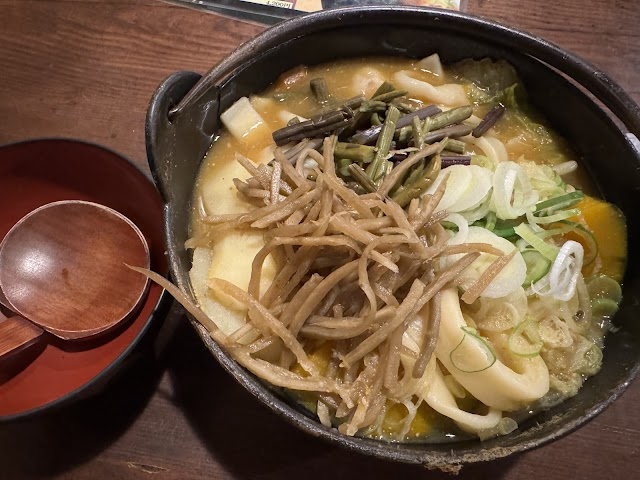
| 営業時間 | 月・火・水・木・金・土・日 11:00〜21:00 |
|---|---|
| 定休日 | なし(要最終確認) |
| 住所 | 山梨県甲斐市玉川２３４ |
| 予約 | 可 — ☎ 055-279-5555 ／ 公式サイト |
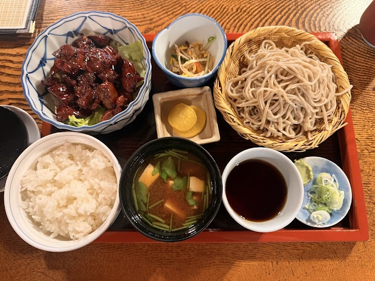
| 営業時間 | 月・火・木・金・土・日 11:00〜15:00, 16:30〜19:30 |
|---|---|
| 定休日 | 水曜 |
| 住所 | 山梨県甲斐市下今井２９６４−１ |
| 予約 | 可 — ☎ 0551-28-2503 |
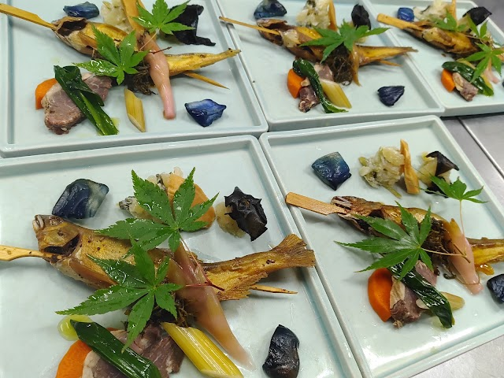
| 営業時間 | 11:30～14:00（L.O.13:30）／17:00～22:00（L.O.21:30） |
|---|---|
| 定休日 | 火・水曜（木曜は予約のみ） |
| 住所 | 山梨県甲斐市龍地３０２８ |
| 予約 | 可 — ☎ 0551-28-4466 |
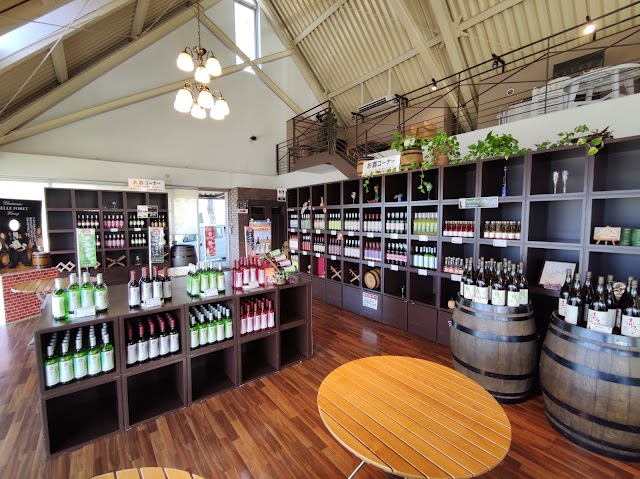
| 営業時間 | 月・火・水・木・金・土・日 9:00〜17:00 |
|---|---|
| 定休日 | なし(要最終確認) |
| 住所 | 山梨県甲斐市下今井１９５４ |
| 予約 | 要確認 — ☎ 0551-28-4451 ／ 公式サイト |
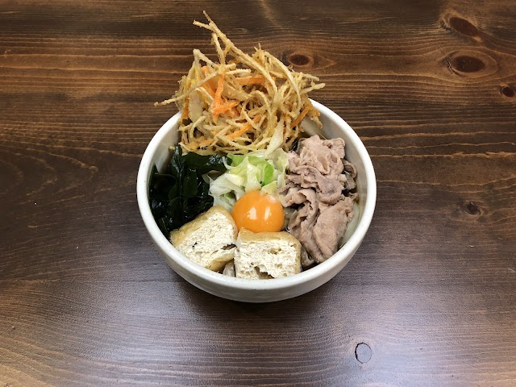
| 営業時間 | 火・水・木・金・土 11:00〜15:00, 18:00〜21:00 ／ 日 11:00〜15:00 |
|---|---|
| 定休日 | 月曜 |
| 住所 | 山梨県甲斐市玉川２５６ 樋口貸店舗 1-1 |
| 予約 | 可 — ☎ 055-225-4320 ／ 公式サイト |
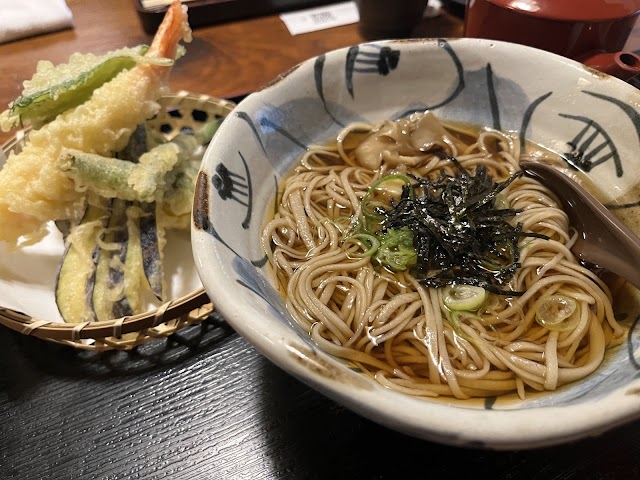
| 営業時間 | 木・金・日 11:30〜14:30 ／ 土 11:30〜14:30, 18:00〜21:00 |
|---|---|
| 定休日 | 月・火・水曜 |
| 住所 | 山梨県甲斐市牛句３２６８−３ |
| 予約 | 可 — ☎ 055-277-3356 ／ 公式サイト |
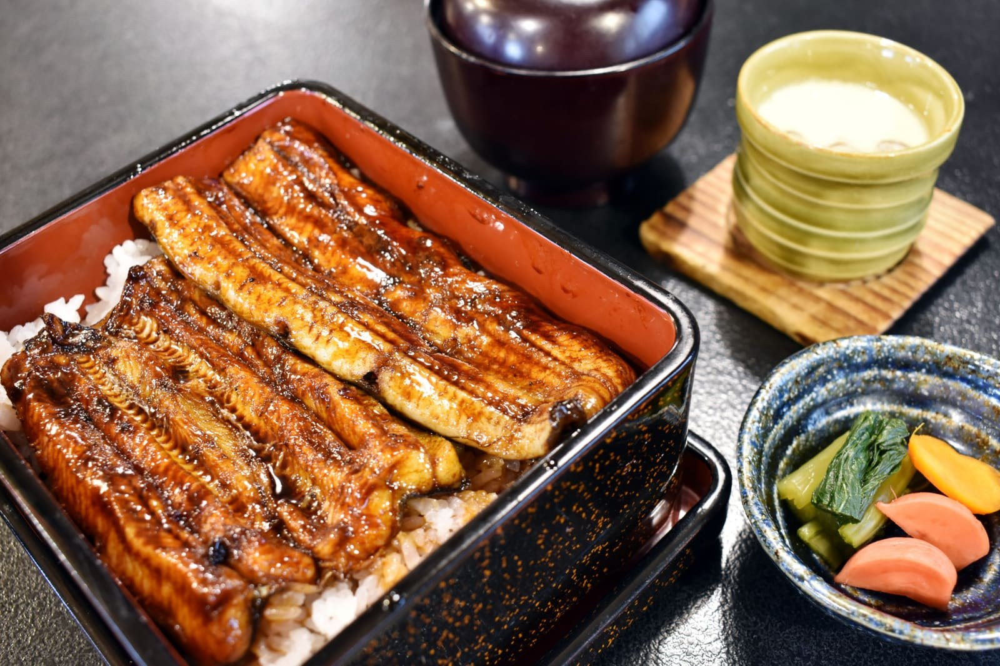
| 営業時間 | 11:30〜L.O.14:00／17:00〜L.O.21:00 |
|---|---|
| 定休日 | 火曜 |
| 住所 | 山梨県甲斐市竜王1044-1 |
| 予約 | 可（仕出し・松花堂弁当あり）— ☎ 055-276-8961 |
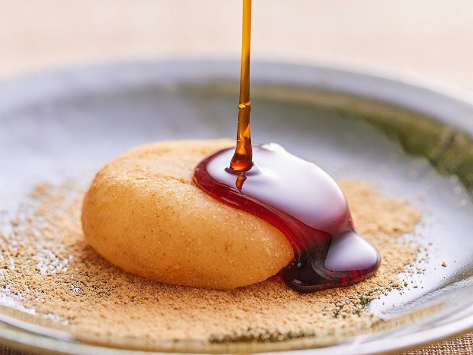
| 営業時間 | 9:00〜17:00 |
|---|---|
| 定休日 | 火曜、1月1日（元旦） |
| 住所 | 山梨県韮崎市中田町小田川154 |
| 予約 | 不要 — ☎ 0551-25-1033 ／ https://kinseiken.co.jp/store-information/ |
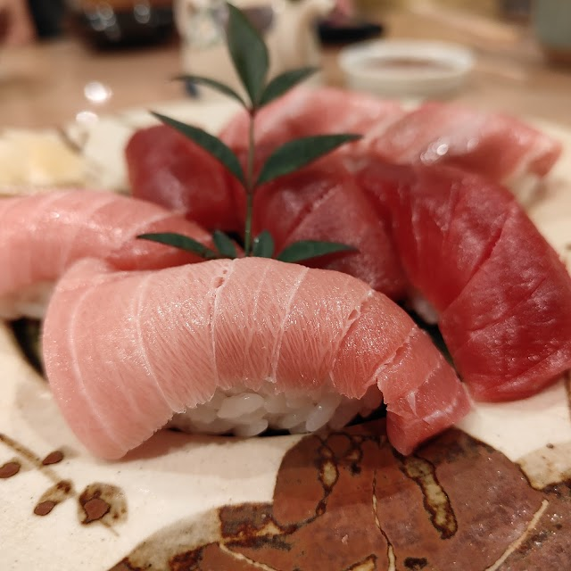
| 営業時間 | 水・木・金 11:30〜14:00, 18:00〜22:00 ／ 土 11:30〜14:00, 17:30〜22:00 ／ 日 11:30〜14:00, 18:00〜21:30 |
|---|---|
| 定休日 | 月・火曜 |
| 住所 | 山梨県甲斐市下今井２７６３ |
| 予約 | 可 — ☎ 0551-28-7009 |
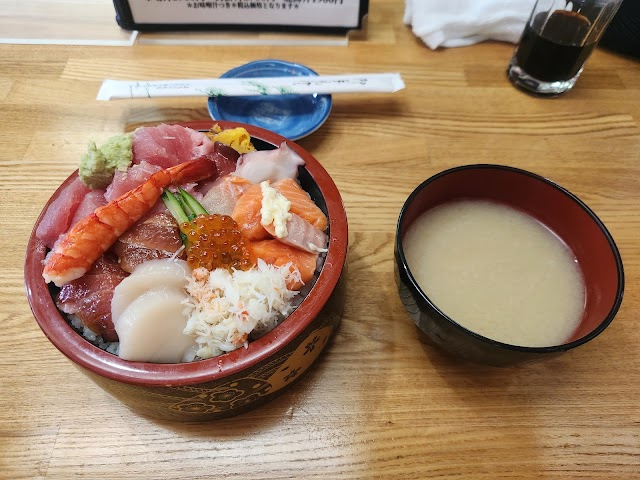
| 営業時間 | 月・火・木・金・土 11:00〜14:00, 17:30〜21:30 ／ 日 17:30〜21:30 |
|---|---|
| 定休日 | 水曜 |
| 住所 | 山梨県甲斐市篠原 |
| 予約 | 可 — ☎ 055-276-8919 |
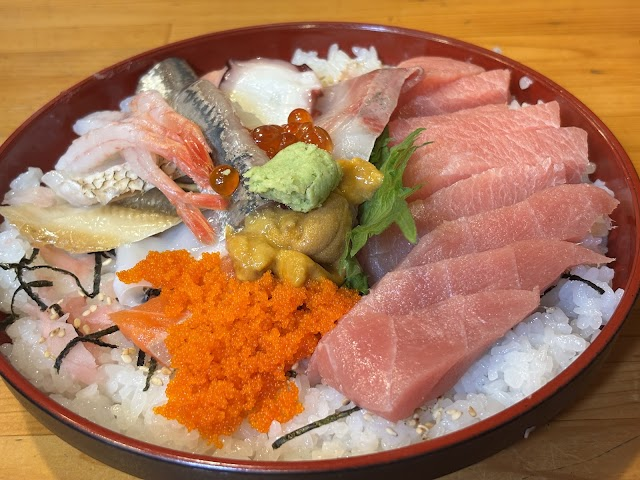
| 営業時間 | 月・火・水 11:50〜14:00, 17:00〜22:00 ／ 金・土・日 17:00〜22:00 |
|---|---|
| 定休日 | 木曜 |
| 住所 | 山梨県甲斐市西八幡１１８７−１４ |
| 予約 | 可 — ☎ 055-276-5433 |
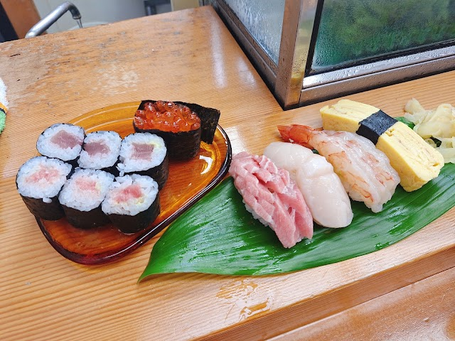
| 営業時間 | 木・金・土・日 11:30〜13:00, 17:30〜20:30 |
|---|---|
| 定休日 | 月・火・水曜 |
| 住所 | 山梨県甲斐市龍地６６６５ |
| 予約 | 可 — ☎ 0551-28-2401 |
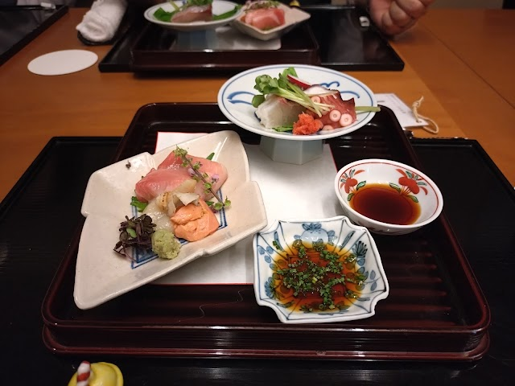
| 営業時間 | 水・木・金・土・日 11:30〜14:30, 18:00〜21:30 |
|---|---|
| 定休日 | 月・火曜 |
| 住所 | 山梨県甲斐市長塚８１−７ |
| 予約 | 可 — ☎ 055-277-9290 ／ 公式サイト |
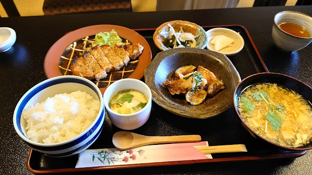
| 営業時間 | 月・水・木・金 11:30〜14:00, 17:30〜22:00 ／ 土・日 11:30〜22:00 |
|---|---|
| 定休日 | 火曜 |
| 住所 | 山梨県甲斐市長塚２６１−６ |
| 予約 | 可 — ☎ 055-277-8788 |
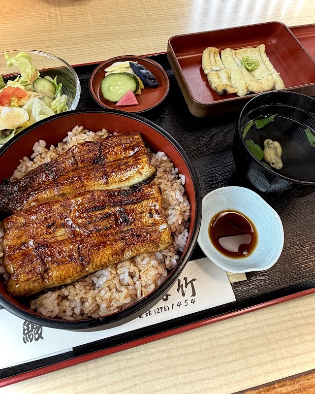
| 営業時間 | 月・水・木・金・土・日 11:30〜13:30, 17:30〜20:00 |
|---|---|
| 定休日 | 火曜 |
| 住所 | 山梨県甲斐市名取３６９−１ |
| 予約 | 可 — ☎ 055-276-1454 |
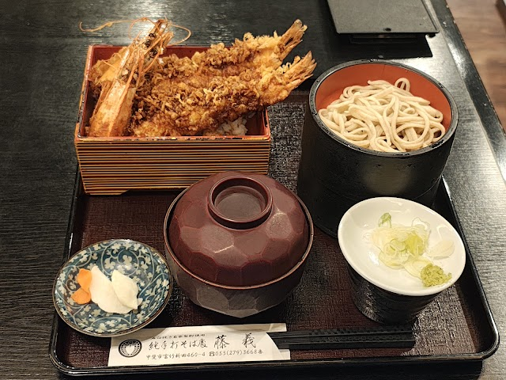
| 営業時間 | 月・火・水・金・土・日 11:00〜15:00, 17:00〜20:45 |
|---|---|
| 定休日 | 木曜 |
| 住所 | 山梨県甲斐市富竹新田４６０−４ |
| 予約 | 可 — ☎ 055-279-3668 ／ 公式サイト |
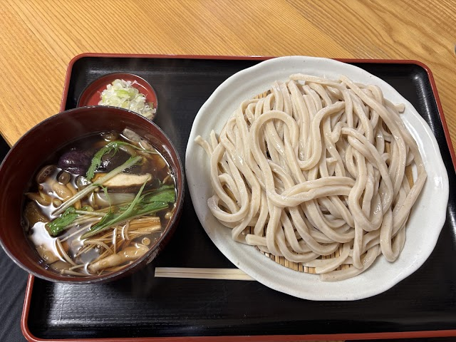
| 営業時間 | 水・木 11:00〜14:00 ／ 土 11:00〜15:00, 17:30〜21:00 ／ 日 11:00〜15:00, 17:30〜20:00 |
|---|---|
| 定休日 | 月・火・金曜 |
| 住所 | 山梨県甲斐市竜王１０４５−１ |
| 予約 | 要確認 — ☎ 055-279-0061 ／ 公式サイト |
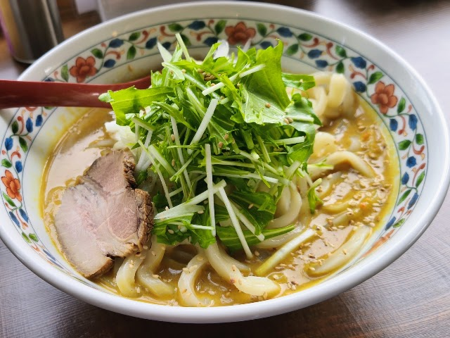
| 営業時間 | 月 11:00〜14:30 ／ 水・木・金 11:00〜14:30, 17:00〜21:00 ／ 土・日 11:00〜21:00 |
|---|---|
| 定休日 | 火曜 |
| 住所 | 山梨県甲斐市龍地３２９６−３ コア響ヶ丘 |
| 予約 | 可 — ☎ 0551-28-1212 ／ 公式サイト |
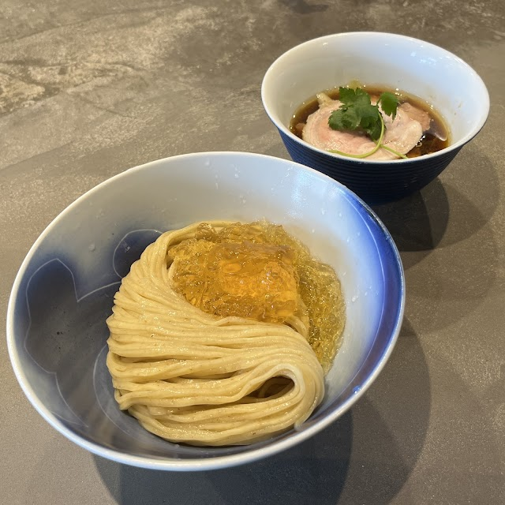
| 営業時間 | 月・火・水・金 11:30〜14:30, 17:30〜20:30 ／ 木 11:30〜14:30 ／ 土 11:00〜14:30 |
|---|---|
| 定休日 | 日曜 |
| 住所 | 山梨県甲斐市下今井２７０７−１ |
| 予約 | 要確認 — ☎ 0551-35-9498 ／ 公式サイト |
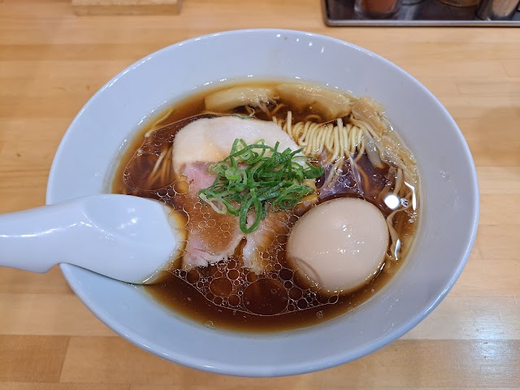
| 営業時間 | 月・火・水・木・金・土・日 11:00〜14:30, 18:00〜21:30 |
|---|---|
| 定休日 | なし(要最終確認) |
| 住所 | 山梨県甲斐市西八幡１８６１ |
| 予約 | 要確認 — ☎ 070-4722-0805 ／ 公式サイト |
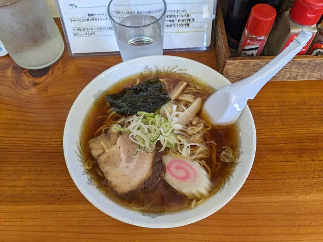
| 営業時間 | 水・木・金・土・日 11:15〜14:30 |
|---|---|
| 定休日 | 月・火曜 |
| 住所 | 山梨県甲斐市牛句２７５０ |
| 予約 | 要確認 — ☎ 055-277-2749 ／ 公式サイト |
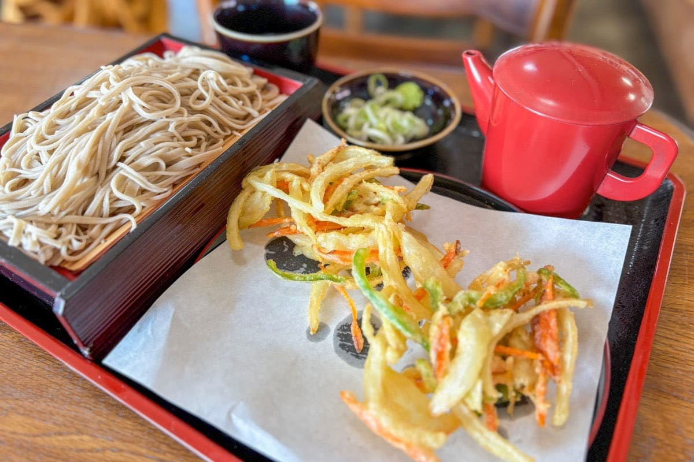
| 営業時間 | 11:30〜15:00 ※日によって変動あり |
|---|---|
| 定休日 | 月曜 |
| 住所 | 山梨県甲斐市竜王新町749-24 |
| 予約 | 可 — ☎ 055-276-4510 |
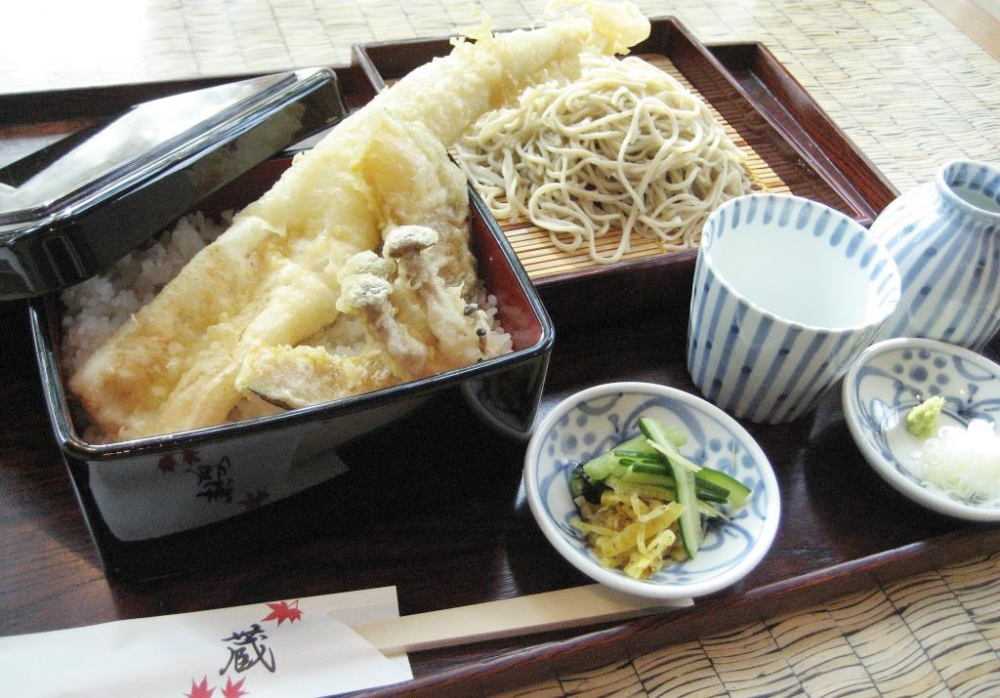
| 営業時間 | 11:00〜15:00／17:00〜21:00 |
|---|---|
| 定休日 | 火曜 |
| 住所 | 山梨県甲斐市竜王38-2 |
| 予約 | 可 — ☎ 055-276-3031 |
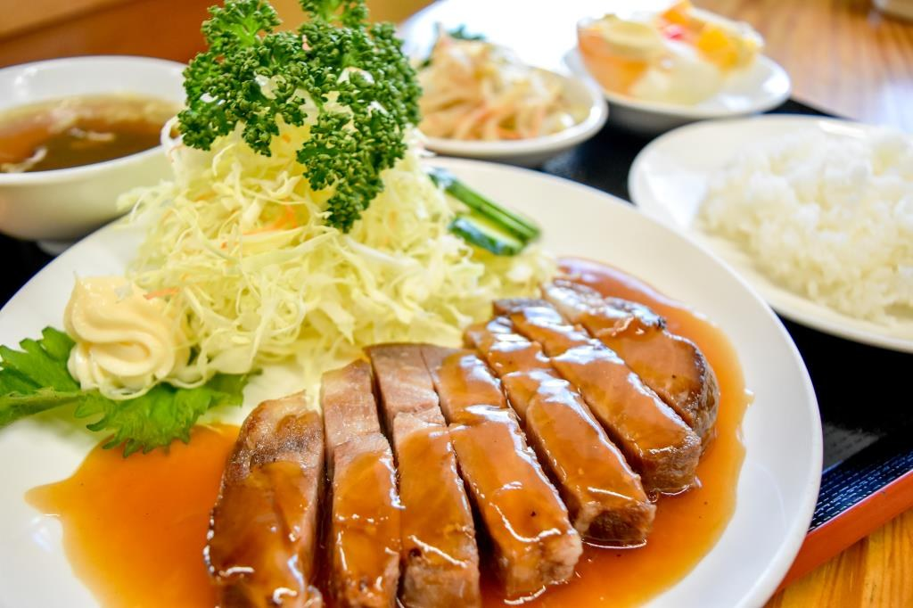
| 営業時間 | 11:30〜14:00（L.O.13:30）／17:00〜22:00（L.O.21:30） |
|---|---|
| 定休日 | 月曜（月曜が祝日の場合は火曜） |
| 住所 | 山梨県甲斐市島上条2139-3 |
| 予約 | 可（宴会・無尽は要予約）— ☎ 055-277-8900 |
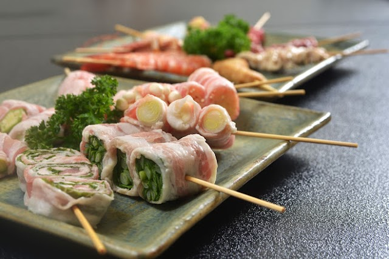
| 営業時間 | 月・火・水・木・金・土・日 11:30〜14:00, 16:00〜22:00 |
|---|---|
| 定休日 | なし(要最終確認) |
| 住所 | 山梨県甲斐市篠原３２３１−３ |
| 予約 | 可 — ☎ 055-276-7788 ／ 公式サイト |
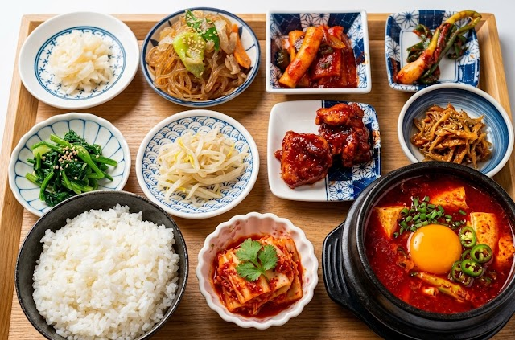
| 営業時間 | 月・火・水・金・土・日 11:30〜13:30, 17:30〜23:00 |
|---|---|
| 定休日 | 木曜 |
| 住所 | 山梨県甲斐市西八幡２３５５ |
| 予約 | 可 — ☎ 070-2497-1016 ／ 公式サイト |
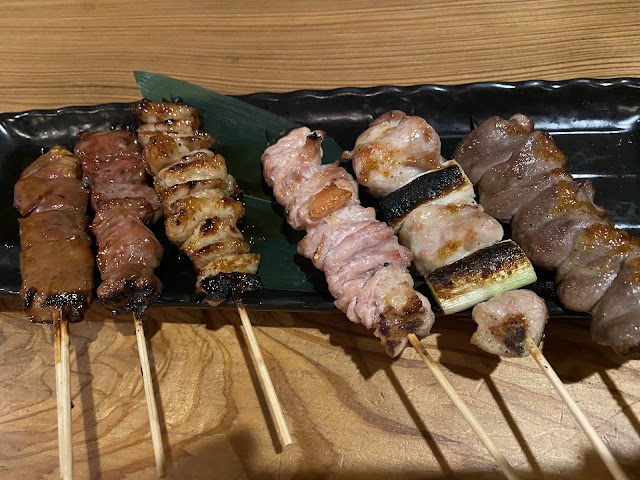
| 営業時間 | 月・火・水・木 17:00〜23:00 ／ 金・土 17:00〜0:00 |
|---|---|
| 定休日 | 日曜 |
| 住所 | 山梨県甲斐市竜王１２８４−１ |
| 予約 | 可 — ☎ 055-276-3465 ／ 公式サイト |
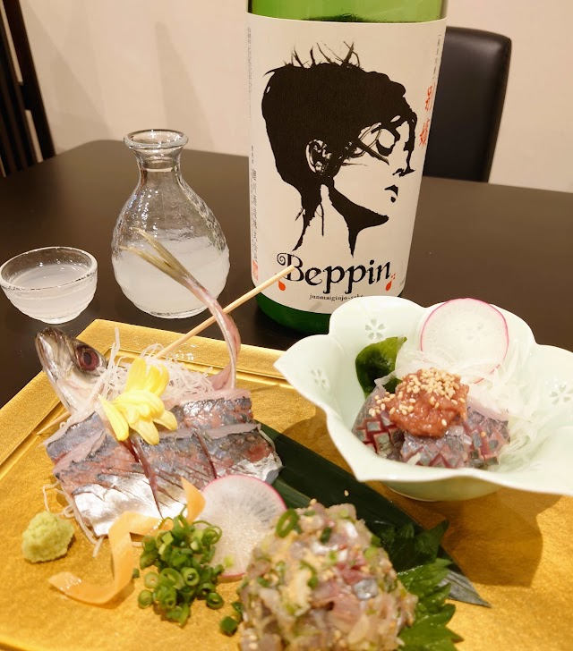
| 営業時間 | 月・木・金・土・日 17:00〜23:00 |
|---|---|
| 定休日 | 火・水曜 |
| 住所 | 山梨県甲斐市篠原８８０−１ |
| 予約 | 可 — ☎ 090-8164-0168 |
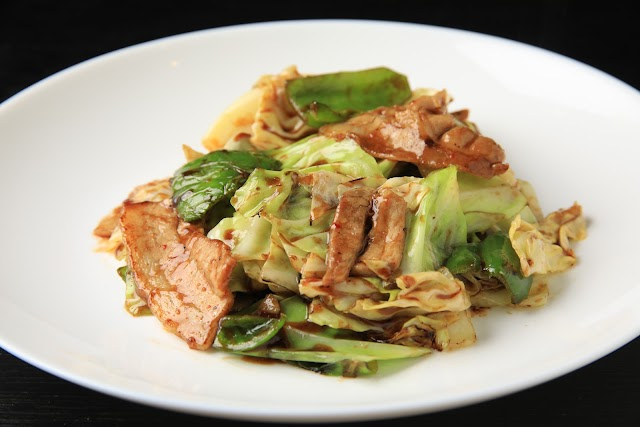
| 営業時間 | 月・火・水 17:00〜0:00 ／ 金 17:00〜3:00 ／ 土 16:00〜3:00 ／ 日 16:00〜0:00 |
|---|---|
| 定休日 | 木曜 |
| 住所 | 山梨県甲斐市名取７８７−１ |
| 予約 | 可 — ☎ 055-225-6077 ／ 公式サイト |
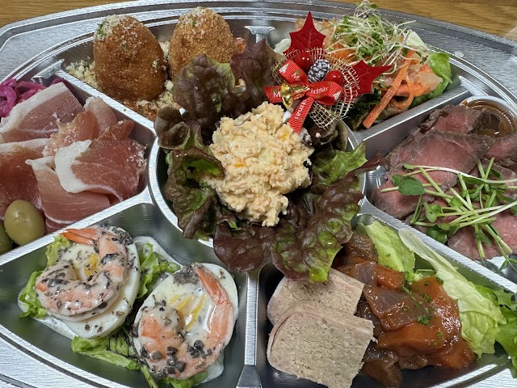
| 営業時間 | 月・火・水・金・土・日 11:30〜14:00, 18:00〜22:00 |
|---|---|
| 定休日 | 木曜 |
| 住所 | 山梨県甲斐市龍地３５７９−１３ |
| 予約 | 可 — ☎ 0551-45-6809 ／ 公式サイト |
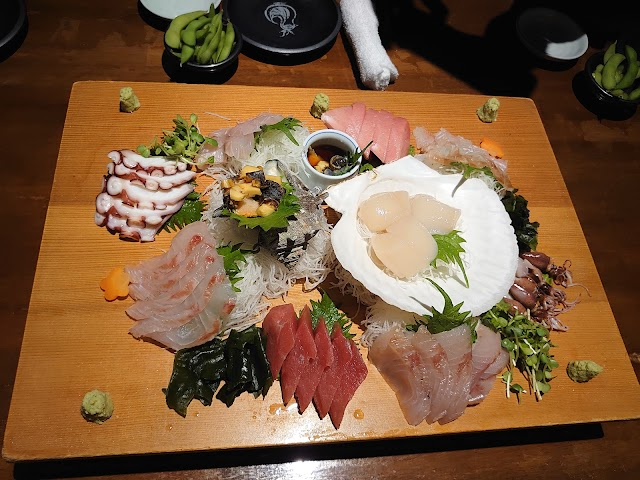
| 営業時間 | 火・水・木・金・土・日 16:00〜23:45 |
|---|---|
| 定休日 | 月曜 |
| 住所 | 山梨県韮崎市富士見１丁目６−２６ |
| 予約 | 可 — ☎ 0551-23-1323 ／ 公式サイト |
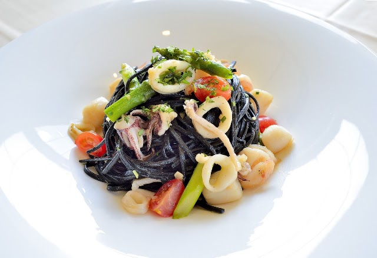
| 営業時間 | 水・木・金・土・日 11:30〜14:00, 18:00〜20:00 |
|---|---|
| 定休日 | 月・火曜 |
| 住所 | 山梨県甲斐市下今井２４４６ |
| 予約 | 可 — ☎ 050-5571-6686 ／ 公式サイト |
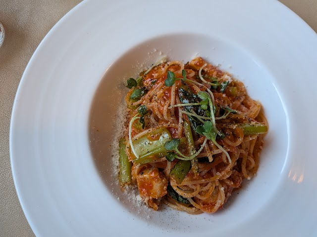
| 営業時間 | 月 11:30〜14:00 ／ 火・水・金・土・日 11:30〜14:00, 18:00〜21:00 |
|---|---|
| 定休日 | 木曜 |
| 住所 | 山梨県甲斐市竜王新町２１９−７ |
| 予約 | 可 — ☎ 055-276-4567 |
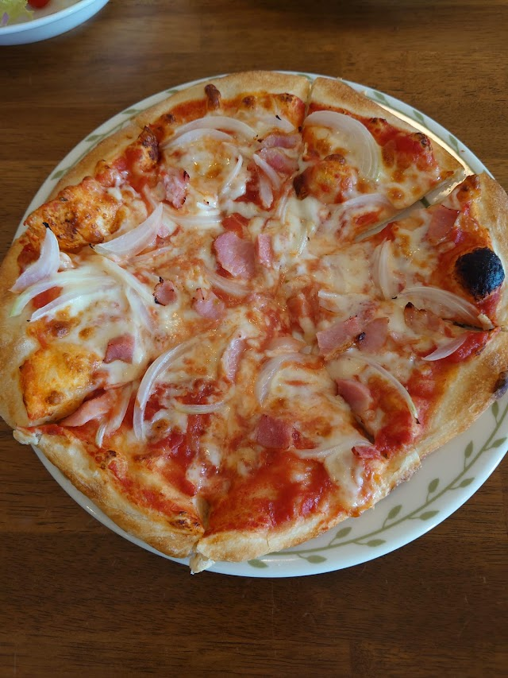
| 営業時間 | 月・水・木・金・土・日 11:30〜14:30, 18:00〜22:30 |
|---|---|
| 定休日 | 火曜 |
| 住所 | 山梨県甲斐市篠原２８８２−３ |
| 予約 | 可 — ☎ 055-279-7456 ／ 公式サイト |
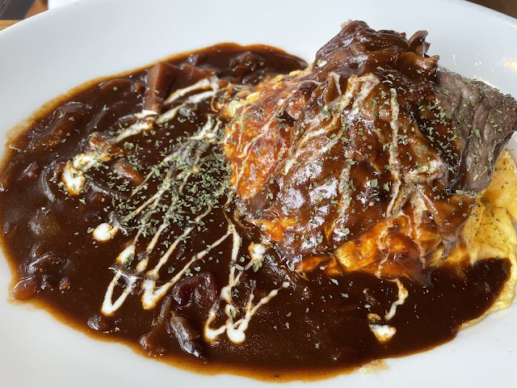
| 営業時間 | 月・火・木・金・土・日 11:00〜14:30, 17:30〜21:30 |
|---|---|
| 定休日 | 水曜 |
| 住所 | 山梨県甲斐市龍地３４５２ |
| 予約 | 可 — ☎ 0551-20-3663 ／ 公式サイト |
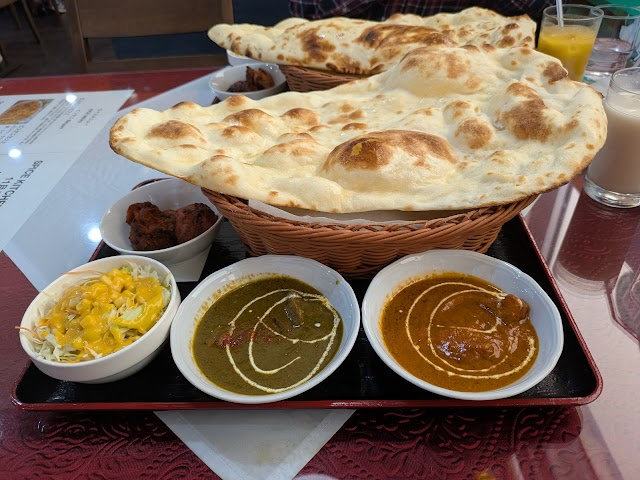
| 営業時間 | 月・火・水・木・金・土・日 11:00〜15:00, 17:00〜22:00 |
|---|---|
| 定休日 | なし(要最終確認) |
| 住所 | 山梨県甲斐市西八幡２３５５ |
| 予約 | 可 — ☎ 055-288-0422 ／ 公式サイト |
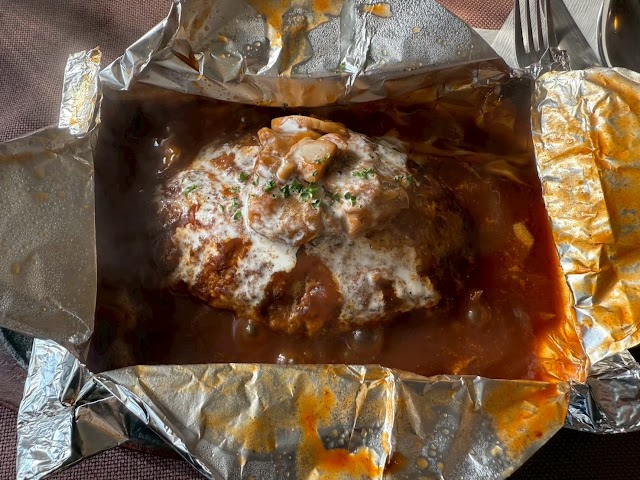
| 営業時間 | 月・火・金・土・日 11:00〜14:00, 16:00〜20:00 ／ 水 11:30〜14:00, 16:00〜20:00 |
|---|---|
| 定休日 | 木曜 |
| 住所 | 山梨県甲斐市西八幡２２９７−６ |
| 予約 | 可 — ☎ 055-276-7151 |
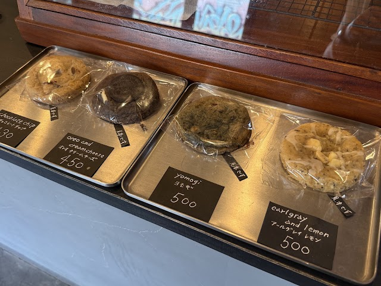
| 営業時間 | 月・木・日 8:00〜18:00 ／ 金 8:00〜18:00, 21:00〜2:00 ／ 土 10:00〜18:00, 21:00〜2:00 |
|---|---|
| 定休日 | 火・水曜 |
| 住所 | 山梨県甲斐市竜王新町２２７６−１０ |
| 予約 | 要確認 — ☎ 055-236-8096 ／ 公式サイト |
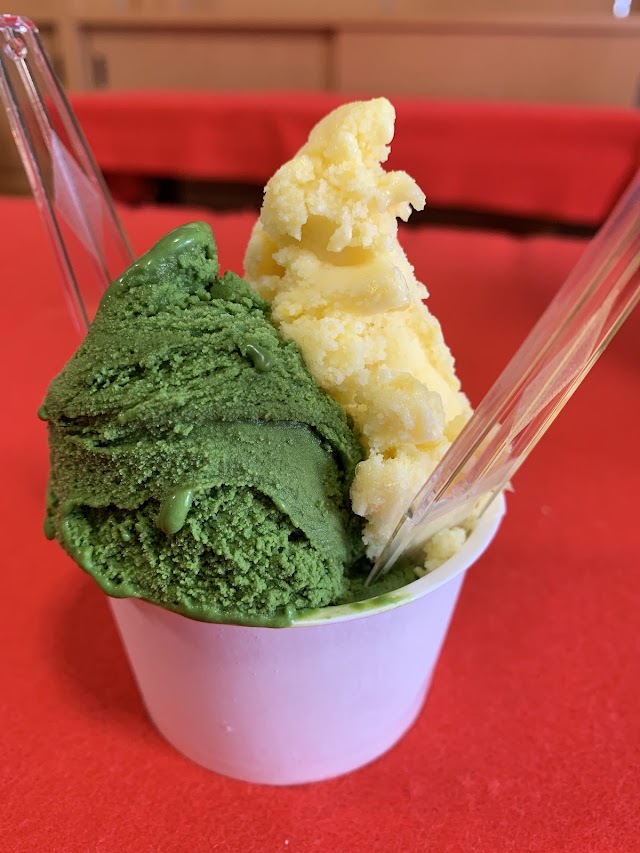
| 営業時間 | 月・火・木・金・土・日 10:00〜18:30 |
|---|---|
| 定休日 | 水曜 |
| 住所 | 山梨県甲斐市万才８３４−１ |
| 予約 | 要確認 — ☎ 055-230-4111 ／ 公式サイト |
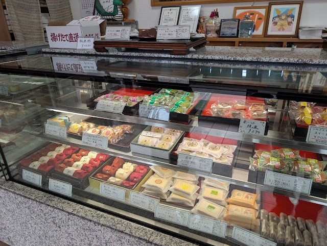
| 営業時間 | 月・火・水・木・金・土 8:30〜19:00 |
|---|---|
| 定休日 | 日曜 |
| 住所 | 山梨県甲斐市西八幡４３５３−３ |
| 予約 | 要確認 — ☎ 055-276-2628 ／ 公式サイト |
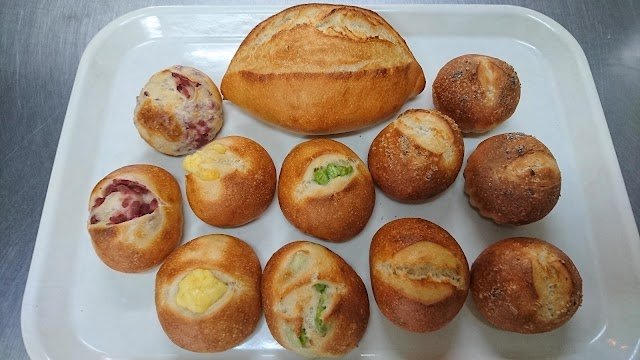
| 営業時間 | 月・火・水・木・金 7:30〜19:00 ／ 土 7:30〜18:00 |
|---|---|
| 定休日 | 日曜 |
| 住所 | 山梨県甲斐市富竹新田１２０８−１ |
| 予約 | 要確認 — ☎ 055-276-3211 ／ 公式サイト |
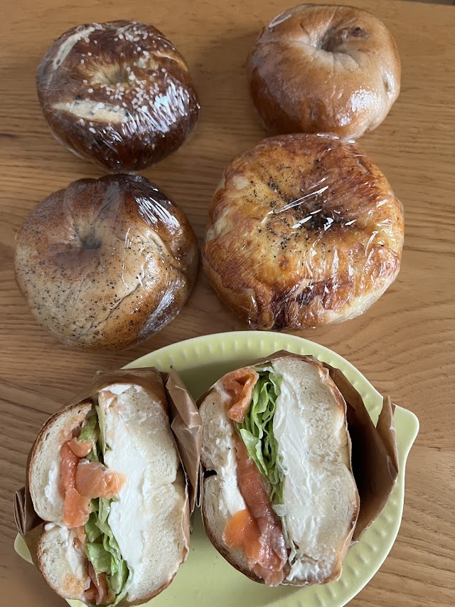
| 営業時間 | 月・木・金・土・日 11:30〜17:00 |
|---|---|
| 定休日 | 火・水曜 |
| 住所 | 山梨県甲斐市中下条６５９−１ |
| 予約 | 要確認 — ☎ 090-9366-8586 ／ 公式サイト |
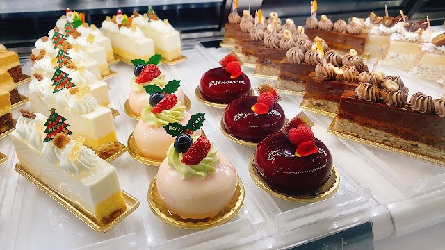
| 営業時間 | 9:30～19:30 |
|---|---|
| 定休日 | 不定休（公式サイトの営業案内を確認） |
| 住所 | 山梨県甲斐市長塚３４−１ |
| 予約 | 要確認 — ☎ 055-277-9292 ／ 公式サイト |
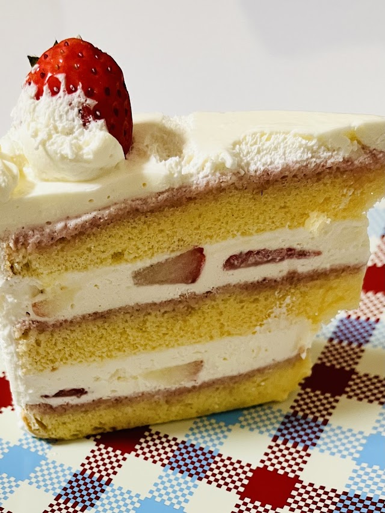
| 営業時間 | 11:00～（なくなり次第閉店） |
|---|---|
| 定休日 | 月曜・火曜（不定休あり） |
| 住所 | 山梨県甲斐市龍地６４４７−１ |
| 予約 | 要確認 — ☎ 0551-28-1477 ／ 公式サイト |
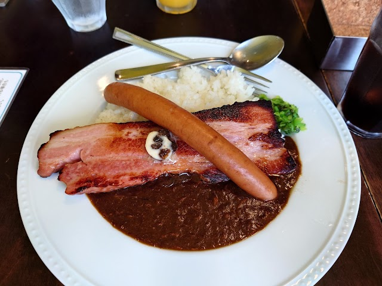
| 営業時間 | 月・火・水・木 11:00〜21:00 ／ 金 11:00〜21:30 ／ 土 7:30〜21:30 ／ 日 7:30〜20:30 |
|---|---|
| 定休日 | なし(要最終確認) |
| 住所 | 山梨県甲斐市篠原２７４−１ |
| 予約 | 可 — ☎ 055-268-3337 ／ 公式サイト |
本ガイドは個人利用目的で作成。掲載情報は2026年8月時点の調査に基づく。写真出典: Google Maps投稿写真(©各投稿者/Google)。